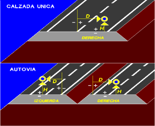
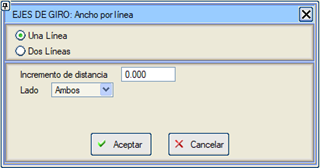

Bu menü, dönme ekseninin (otoyollarda dönme eksenlerinin) konumunu eksen boyunca, uzayda tanımlamayı sağlar. Dönme ekseni, platformun enkesitinde kırmızı kotun uygulandığı noktadır.
Kullanıcı KM'leri seçeneği, kilometrelerin kullanıcı tanımlı değerlerle girilmesine olanak tanır. Bu seçenek etkinleştirilip devre dışı bırakılabilir ve durumu .vol dosyasına kaydedilir.
Tek platformlu yollar durumunda, belirli bir kilometredeki dönme ekseninin konumu, geometrik eksene olan mesafesi D (sağa doğru pozitif, sola doğru negatif) ve kırmızı kot ile olan yükseklik farkı H (pozitif değer platformu kırmızı kota göre aşağı indirir) ile tanımlanır.
Bölünmüş yollar (otoyollar veya ekspres yollar) durumunda, varsayılan olarak dönme ekseninin konumu iç şerit çizgilerindedir ve tek platformlu yollar durumunda, bu menüdeki veriler dönme ekseninin konumunu başka bir yere kaydırmadığı sürece platformun merkezinde olacaktır. Dönme ekseni üzerine, boyuna hatta (veya iki tane varsa boyuna hatlarda) tanımlanan kot uygulanacaktır. Çift deverli platformlara sahip otoyollar durumunda, program dönme ekseninin konumunun hesaplanmasını uyarlar.
Otoyollarda negatif yatay mesafeli dönme eksenleri tanımlandığında, iç banketin deverini kullanma imkanı. Sağ ve sol ötelemeler sütunundaki bitişik kutucuğu etkinleştirmeliyiz.
Eğer dönme ekseninin yüksekliği sıfır değilse, platformun dönme eksenindeki kotunu elde etmek için kırmızı kot kotundan H düşülür (H'nin pozitif olmasının platformu aşağı indirdiğini unutmayın). Bu iki değer, D ve H, kilometreye bağlı olarak değişebilir ve şu hususlar dikkate alınmalıdır:
- Eğer iki ardışık noktada, D veya H için farklı değerler verilirse, iki nokta arasındaki değişimin doğrusal olduğu kabul edilir.
- Eğer tanım, hesaplama aralığını kapsamazsa, dışa doğru uzatılır (ekstrapolasyon yapılır).
- Eğer dönme eksenini varsayılan konumundan hareket ettirmek gerekmiyorsa, bir veriyi tamamen sıfır bırakmak yeterlidir.
Bu menüdeki KM verileri hem grafik olarak hem de sayısal olarak girilebilir ([Tıklama]/[Klavye] düğmeleri). Grafik olarak verilmesi durumunda, noktanın eksen üzerindeki izdüşümü tam bir enkesite veya enterpole edilmiş bir enkesite karşılık gelebilir.
Ayrıca, aşağıdaki seçenekler mevcuttur:
| [Otomatik] |
Mevcut eksenin başlangıç ve bitiş kilometreleriyle iki veri oluşturur.
Dönme eksenini, farklı kilometrelerde farklı eksantriklikler tanımlanmış olmasına rağmen, plan ekseni üzerinde korumak istenen yollar için; Otomatik aracı, tabloyu aynı kilometreler ve eksantriklik ile aynı ancak zıt işaretli yatay öteleme ile doldurur. Plan ekseninde yanal bir atlama nedeniyle ani bir sıçrama olursa, deverden kaynaklanan kot farkı, kırmızı kotta dikey bir sıçrama ile telafi edilmelidir.
|
[Kaydet] 
[Yükle] 
|
Bu tablonun verilerini .egi uzantılı dosyalar aracılığıyla kaydetmeyi ve geri yüklemeyi sağlar. |
| [Çizgiye Göre] |
Bu seçenekle, dönme ekseninin D mesafesi, bir plan çizgisi seçilerek tanımlanabilir.
Otoyollarda, her bir platformdaki dönme ekseninin konumunu belirlemek için farklı bir çizgi seçmeye olanak tanıyan bir diyalog kutusu oluşturulur. Bu durumda veriler, her iki çizginin de eksen üzerinde izdüşümü olduğu bölgede ve belirli bir değerin katları olan kilometrelerde hesaplanır.

|
D.E. Çiz
|
Bu kutucuk etkinleştirilerek, enkesitlerde dönme ekseninin konumu işaretlenebilir.
|
Referans geometrik eksende
|
İç şerit çizgisi yerine otoyolun geometrik eksenini referans olarak kullanır.
|
|